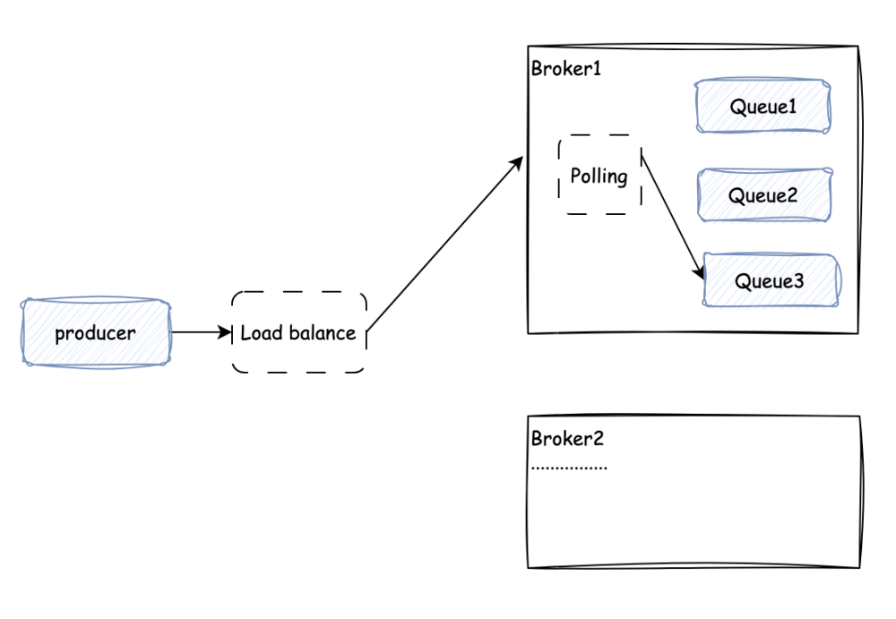
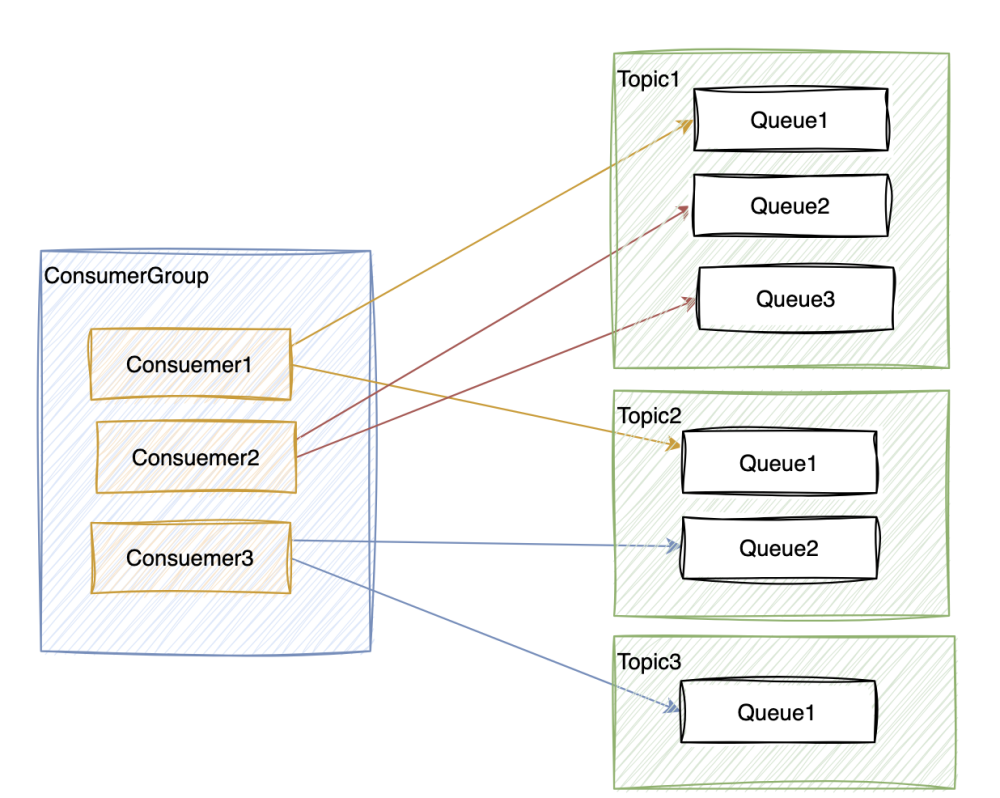

服务端设计 #
CatMQ最核心的三个功能为：消息发送，消费储存，消息拉取, CatMQ实现方法如下图所示:
上图简单描述了CatMQ消息的发送，储存，消费流程。
下面将重点解决四个问题
-
每个topic有多个Queue,服务端是如何将消息存到某个Queue中去的
-
每个topic有多个Queue,消费端是怎么知道去哪个Queue中去拉取数据的
-
如果某个consumer挂掉了，会对系统有什么影响
-
如果某个服务端挂掉了，会有什么影响
1. 消息存储设计 #
服务端储存消息的数据流转图如下

如上图所示，producer 提交信息的流程如下
-
Producer发送请求，通过负载均衡将流量分发到一台broker上面
-
broker收到请求之后，会根据实际的TopicA队列的数量和计数器，对queue进行轮训储存
-
负载均衡并没有使用比较流行的 dubbo和 spring Eureka.简易配合 nginx 使用
2. 队列分配设计 #
consumer是怎么知道自己应该拉取哪个Queue的消息呢？
在consumer注册的时候，服务端会对consumer 进行队列分配，分配的逻辑如下图

如图所示，最基本的设计是，一个consumer可以对应多个Queue, 一个Queue只能对应一个consumer, consumer 和 Queue是一对多的关系。
系统在启动的时候，如果有consumer注册进来，服务端要根据consumerGroup下面的consumer数量，consumerGroup订阅的所有的topic的队列数量进行队列分配。原则是尽量的平衡分配consumer 和Queue的关系。consuemrGroup和Queue的分配的关系会登记在queueOffset表中，并且有一个守护线程一直在轮训维护queueOffset表，确保数据的实时准确性。
例如上图的对应关系中，consumerGroup中有三个consumer,consumerGroup订阅的topic一共分配了6个Queue。那么系统的分配算法就是平均的将这六个Queue 平均的分给三个消费者。
那如果在系统正常运行的时候，如果consumer的数量出现变化，或者当前Topic 下面Queue 的数量出现变化，系统是如何确保消费者和队列的对应关系的呢？请看下文的重平衡设计
3. 重平衡设计 #
为了解决consuemr和Queue数量动态变化的时候，出现实时情况和QueueOffset表记录不一致的问题，我们单独做出一个消费者和队列的重平衡设计，设计图如下

如上图所示，重平衡的逻辑如下
-
CatMQ有一个重平衡器，它用来监控consumer的加入和退出，topic扩容和缩容
-
当监控到第一步的出现数据变化的时候，就回触发重平衡对这个consumerGroup进行重平衡操作,上图中是 Consumer3 退出消费
-
重平衡器对需要重平衡的consumerGroup,进行consumer和Queue进行重新分配，将 Queue3 交给 Consumer1 消费
4. 高可用设计 #
作为一个分布式消息队列系统，我是怎么设计的分布式和高可用的呢？ 具体可以参考： - HA Design